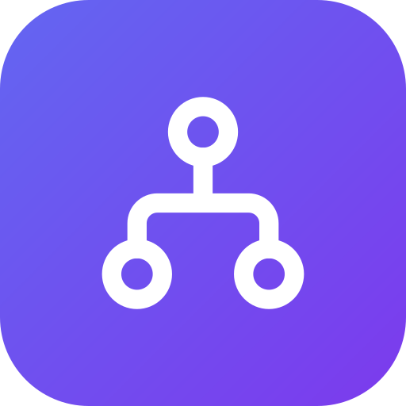
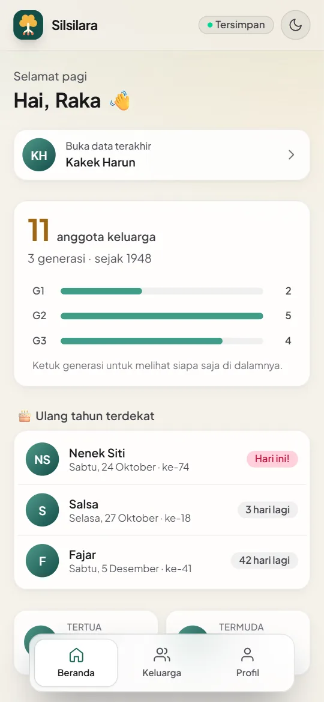
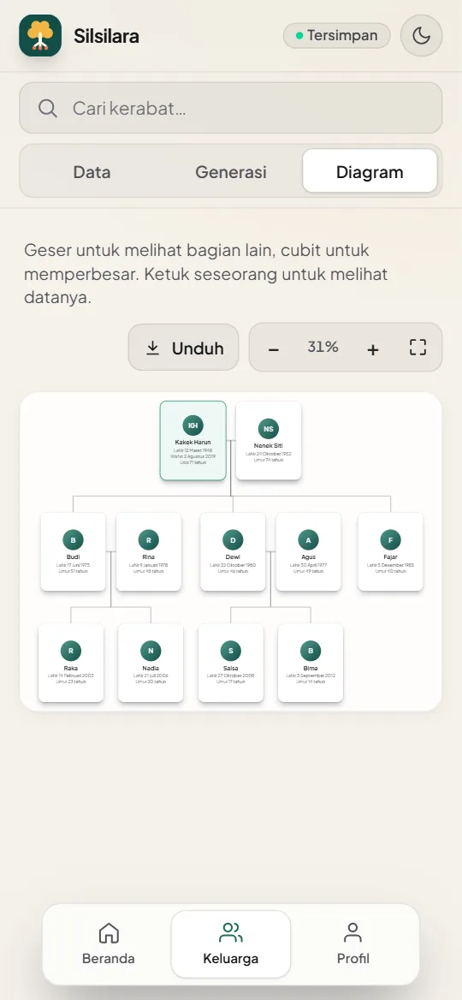
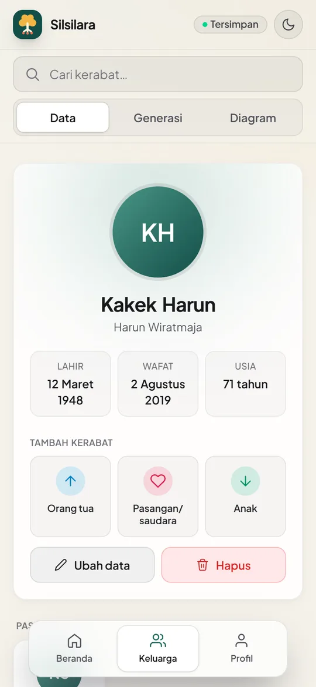
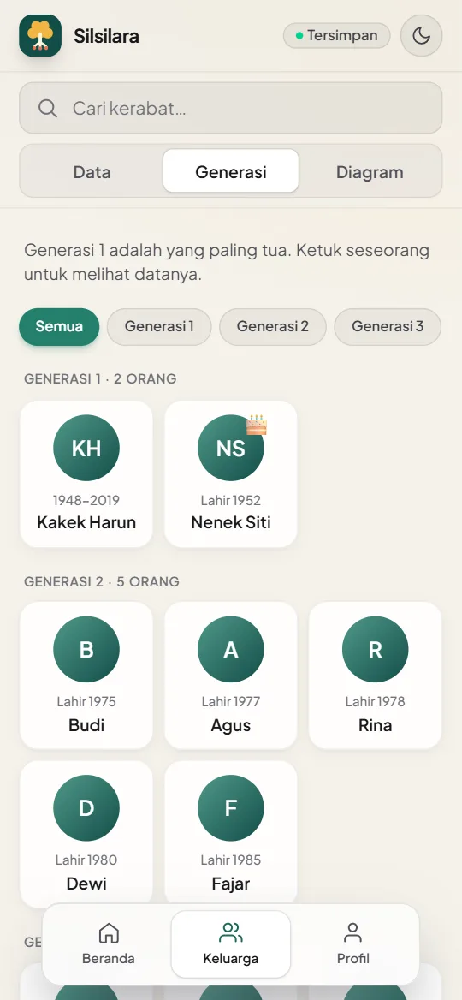

Silsilara
Risyad Abdala Ramadhan
Telusuri Akar, Hubungkan Generasi
- Versi
- 1.0.0
- Ukuran
- 3,7 MB
- Android
- 5.1+
- Harga
- Gratis
Diperbarui 20 Oktober 2026. APK diunduh dari Google Drive. Bila muncul peringatan pemindaian virus, ketuk Tetap download (Download anyway).
Pindai kode ini dengan kamera HP Android untuk membuka halaman ini di HP, lalu ketuk Unduh APK.
Tampilan aplikasi




Contoh di atas memakai data keluarga fiktif.
Apa yang baru
Cara memasang di HP Android
- Ketuk Unduh APK di atas. Google Drive terbuka; ketuk tombol unduh, lalu Tetap download bila diminta.
- Setelah selesai, buka berkas Silsilara-1.0.0.apk dari notifikasi unduhan atau dari aplikasi File → Download.
- Bila muncul pesan bahwa HP tidak diizinkan memasang aplikasi dari sumber ini, ketuk Setelan, nyalakan Izinkan dari sumber ini, lalu kembali.
- Ketuk Instal. Bila Google Play Protect memberi peringatan, ketuk Detail lainnya → Tetap instal. Peringatan ini muncul karena Silsilara tidak dipasang lewat Play Store.
- Buka Silsilara dan ketuk Masuk dengan Google.
Cara memperbarui
Saat ada versi baru, Silsilara menampilkan pemberitahuan dengan tombol Unduh. Anda juga bisa kembali ke halaman ini kapan saja. Pasang APK baru langsung di atas versi lama, tidak perlu menghapus aplikasi. Data silsilah tetap aman karena tersimpan di Google Drive.
Tentang aplikasi
Silsilara adalah aplikasi silsilah keluarga untuk Android dan web. Anda bisa menambahkan anggota keluarga beserta foto, tanggal lahir, dan hubungannya, lalu melihatnya sebagai kartu, daftar generasi, atau diagram pohon keluarga. Silsilah baru dipandu langkah demi langkah: mulai dari diri Anda, lalu orang tua, pasangan, dan anak.
- Data milik Anda. Seluruh data silsilah dan foto disimpan di Google Drive pemilik silsilah, bukan di server kami.
- Diisi bersama. Undang anggota keluarga lewat akun Google mereka, dengan hak akses Admin atau Lihat saja.
- Diagram pohon keluarga. Cubit untuk memperbesar, muat seluruh pohon ke layar, lalu unduh sebagai gambar atau PDF.
- Hubungan otomatis. Sebutan seperti Kakek, Sepupu, Menantu, dan Besan dihitung dari silsilah.
- Pengingat ulang tahun. Notifikasi saat ada anggota keluarga yang berulang tahun.
- Bahasa Indonesia & English, tema gelap dan terang.
Pertanyaan umum
Kenapa Silsilara tidak ada di Play Store?
Untuk saat ini Silsilara dibagikan langsung sebagai berkas APK lewat halaman ini. Halaman ini selalu berisi versi terbaru, jadi cukup bagikan tautan ini ke keluarga.
Apakah aman dipasang?
APK di halaman ini ditandatangani dengan kunci resmi Silsilara, jadi pembaruan hanya bisa dipasang di atas aplikasi asli. Unduh hanya dari halaman ini, jangan dari berkas yang diteruskan orang lain.
Apakah data saya hilang saat memperbarui?
Tidak. Pasang versi baru di atas versi lama. Data silsilah dan foto ada di Google Drive, bukan di HP.
Saya memakai iPhone atau laptop.
Gunakan versi web dengan akun Google yang sama. Isinya sama dengan aplikasi Android.
Pemasangan diblokir atau gagal.
Pastikan izin Instal aplikasi tidak dikenal sudah dinyalakan untuk aplikasi yang membuka APK (Chrome, Drive, atau File). Bila muncul "Aplikasi tidak terpasang" karena versinya bentrok, hapus dulu Silsilara versi uji coba lalu pasang ulang; data di Google Drive tetap aman.
Masuk dengan Google
Silsilara meminta izin akses Google Drive terbatas: hanya berkas yang dibuat Silsilara sendiri, untuk membuat, membaca, dan memperbarui silsilah Anda. Anggota keluarga yang Anda undang membuka silsilah itu lewat server kecil Silsilara, tanpa perlu memberi izin Drive mereka. Penjelasan lengkapnya ada di Kebijakan Privasi.